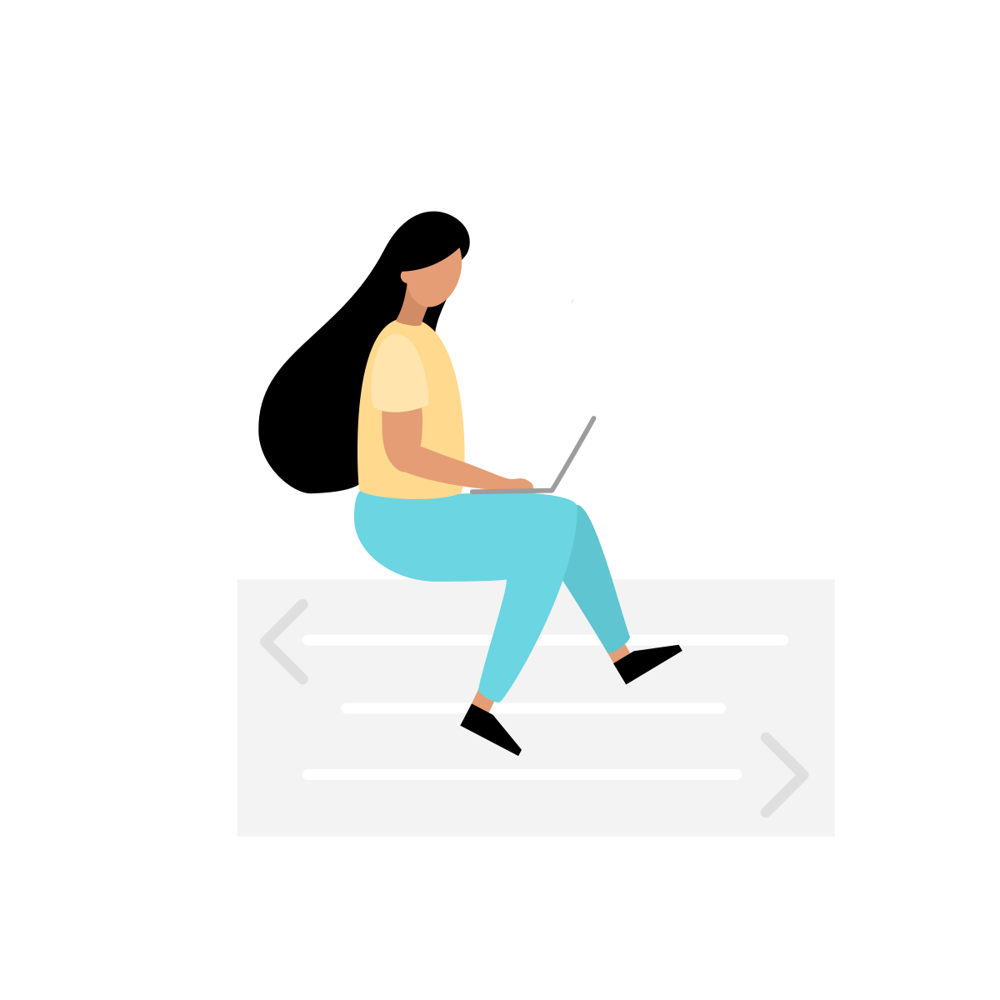

About Her

Siwi Nur Safitri
Seorang cewe imut yg menempuh jalan hidup ukhti ukhti. Lahir di Bandung pada tanggal 2 Juni 2003, Siwi juga merupakan anak ke-2 dari 4 bersaudara. Aku berpacaran dengan dia sejak 25 Juli 2016, sudah hampir 5 tahun. Dia orang yg sangat polos dan menjaga diri, semenjak awal pacaran, kita tidak pernah ada masalah dengan selingkuh, karna percaya satu sama lain dengan kuat. Salah satu hobby siwi yg aku tau adalah baca buku dan nonton drakor, dia orang yg ambivert tapi cenderung extrovert, kebalikan dariku yg introvert maksimal.
Seorang cewe imut yg menempuh jalan hidup ukhti ukhti. Lahir di Bandung pada tanggal 2 Juni 2003, Siwi juga merupakan anak ke-2 dari 4 bersaudara. Aku berpacaran dengan dia sejak 25 Juli 2016, sudah hampir 5 tahun. Dia orang yg sangat polos dan menjaga diri, semenjak awal pacaran, kita tidak pernah ada masalah dengan selingkuh, karna percaya satu sama lain dengan kuat. Salah satu hobby siwi yg aku tau adalah baca buku dan nonton drakor, dia orang yg ambivert tapi cenderung extrovert, kebalikan dariku yg introvert maksimal.